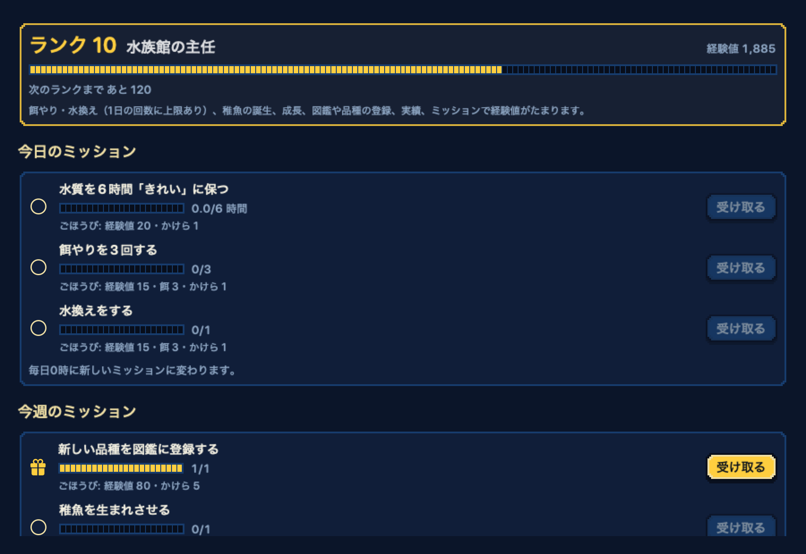
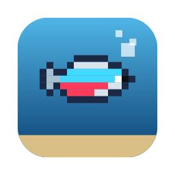
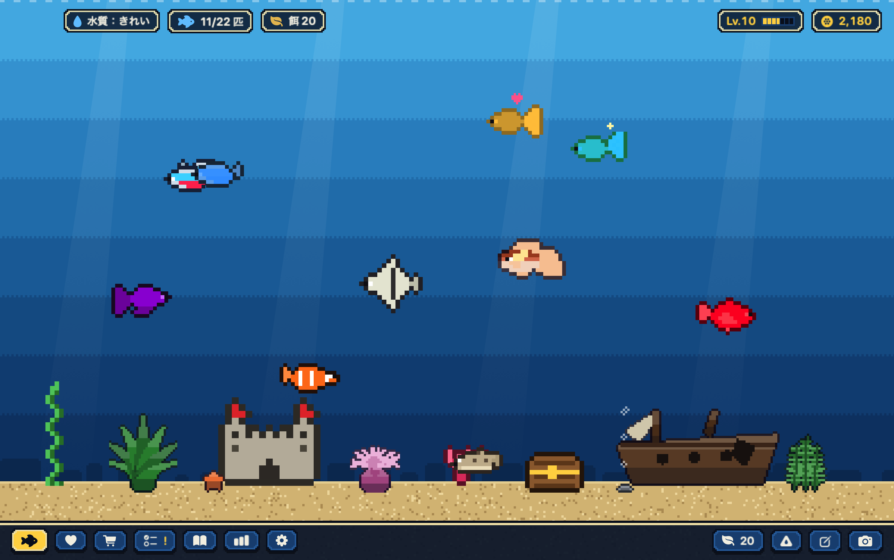

ミッションと飼育員ランク
毎日3つ、毎週2つのミッション。餌やりや繁殖で経験値がたまり、ランクが上がるとお店に新しい魚が並びます。ごほうびの「かけら」は竜宮城などの限定の装飾に。

TokariumMac のためのドット絵アクアリウム
AIを使うほど、
水槽がにぎやかになる。
Claude Code や Codex を使うとコインがたまり、デスクトップのドット絵の水槽で魚を育てられます。
無料・macOS 14 以降・Apple シリコン / Intel
水をクリックすると、魚が寄ってきます
しくみ
このMacに残る利用記録から、トークン数だけを取り出して使います。特別な操作はいりません。
重み付きで 50万トークンが 1コイン。入力と出力は1、キャッシュ書き込みは0.25、キャッシュ読み込みは0.1 として数えます。
お店で魚や装飾を買い、餌やりと水換えで育てます。元気な成魚が2匹いると、稚魚が生まれることも。
数えるのはアプリを入れたあとの利用だけ。会話の本文は使いません。
品種改良
魚は色の遺伝子を2つ持ち、親から1つずつ受け継ぎます。1種類の魚につき品種は13。2色を組み合わせた品種は、繁殖でしか生まれません。
親 A
親 B
生まれうる稚魚
遊び

毎日3つ、毎週2つのミッション。餌やりや繁殖で経験値がたまり、ランクが上がるとお店に新しい魚が並びます。ごほうびの「かけら」は竜宮城などの限定の装飾に。
くいしんぼう、臆病、好奇心旺盛…。よく世話をした魚ほど、水をたたくと遠くから寄ってきます。
デスクトップ表示、ウィジェット、スクリーンセーバー、メニューバーの小窓。作業のじゃまをせずに、いつも水槽が見えます。
装飾は57種。「和の庭」「沈没船の宝」など、組み合わせのボーナスを探して配置します。
昼と夜で変わる曲と、餌やりや水換えの音。すべてこのアプリのために作りました。上の「♪」で試聴できます。
条件がそろうと、ときどき水槽に迷いこんできます。図鑑にはヒントだけ。記念の魚は、AIごとに 100・1000・5000 コインで3段階。
画面

対応AI
ChatGPT デスクトップや Claude デスクトップのチャットは、トークン数がMacに残らないため読めません。推定値は、設定でオンにしたときだけコインにします。
プライバシー
使うのはトークン数・時刻・重複を防ぐためのIDだけ。会話の本文は使わず、保存も送信もしません。
記録はこのMacの中だけで扱います。外と通信するのはアップデートの確認だけ。APIキーやCookieにも触れません。
読み取り専用です。AIツールの設定や記録を書きかえることはありません。
無料・MITライセンス。Apple の公証済みで、アップデートはアプリの中から受け取れます。
macOS 14 Sonoma 以降 ・ Apple シリコン / Intel
Homebrew でも入れられます brew install --cask yuuyuu86/tap/tokarium
いいえ。コインになるのは、はじめて起動したあとの利用だけです。最初に魚1匹と50コイン、餌20回分をプレゼントします。
餌やりと水換えを忘れ続けると弱り、やがて死んでしまいます。ただしMacを閉じていた間の反映は最大48時間分で、それだけで死ぬことはありません。
はい。iCloud Drive で同期すると、コインはMacごとのAI利用の合計になります。
Tokarium をゴミ箱に入れ、データも消す場合は ~/Library/Application Support/Tokarium を削除します。Homebrew で入れた場合は brew uninstall --zap --cask tokarium でまとめて消せます。